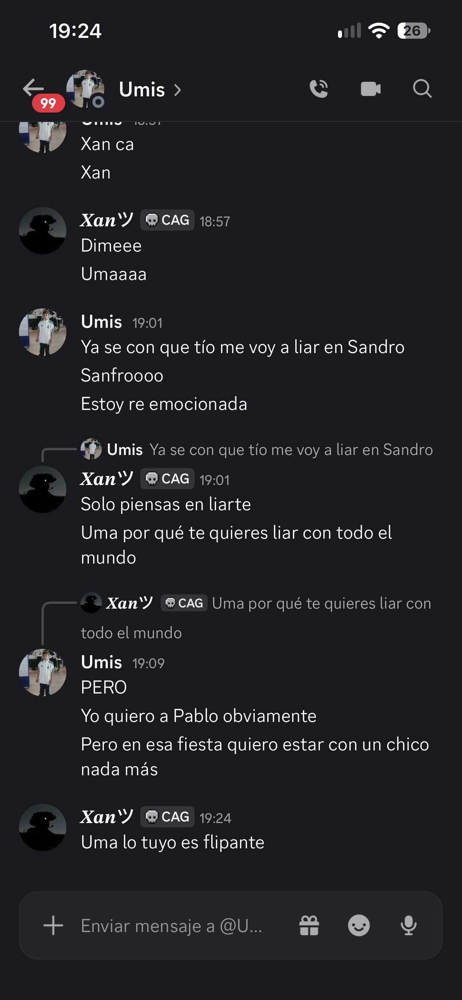

🔥 Mejor Salseo
El Clásico

El momento en que todo se volvió caos. Si sabes, sabes. Si no sabes... preguntar es arriesgarse a respuestas que no olvidarás.
El mejor salseo de Toca Hierbas. Capturas que no se olvidan.
Aquí se guardan los momentos más épicos, divertidos y... cuestionables de la comunidad.
Este es solo el comienzo. Más capturas por llegar 🔥

El momento en que todo se volvió caos. Si sabes, sabes. Si no sabes... preguntar es arriesgarse a respuestas que no olvidarás.
Estamos recopilando los mejores momentos. Vuelve pronto para más salseo fresco.